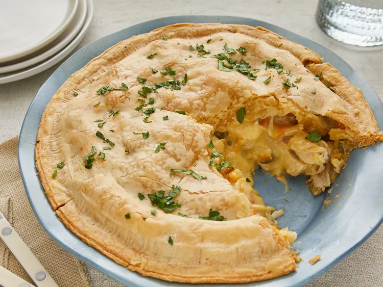

Chicken pie is a delicious dish made with a flaky crust and a filling of tender chicken pieces mixed with vegetables like carrots, peas, and potatoes. All of this is coated in a creamy sauce, making it a warm, comforting meal.
This chicken pot pie recipe is a comforting and easy-to-make dish that starts with pre-cooked, shredded chicken mixed with a blend of frozen vegetables like peas, carrots, and corn. The filling is rich and creamy, thanks to a combination of cream of chicken soup and milk, which creates a smooth, flavorful base. This mixture is then poured into a pie crust, with another layer of crust placed on top to seal in all the deliciousness.
Baking in the oven until the crust is golden brown, the pie emerges hot and fragrant, ready to be sliced and served. The result is a perfect balance of tender chicken, hearty vegetables, and a luscious, creamy sauce, all encased in a crispy, flaky crust. It's a straightforward recipe that delivers a satisfying and heartwarming meal for any night of the week.